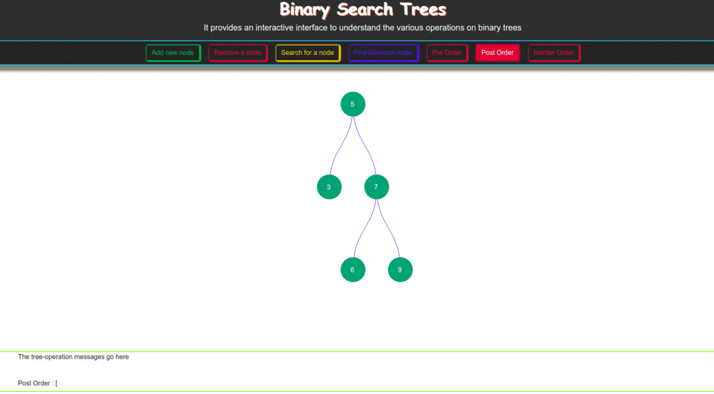

Building Interactive Experiment involving Binary Search Trees - Project Report
By:
Ankit Pant - 2018201035
Danish Mukhtar – 2018201016
Giridhari Lal Gupta – 2018201019
Table of Contents
1 Introduction
Binary Search Trees [1] are data-structures that are composed of Binary Nodes. A Binary Node are defined as a node consisting of a triplet: <Data,Left-child,Right-Child>. Binary Search Trees are special binary trees with the property that the value of Left-child in the triplet (Data,Left-child,Right-child) is always less than the value of Data which is in turn less than the value of Right-child. This project aims to create an interactive environment in which the user can learn about these data structures better. The project involved:
- Creating a Binary Search Tree API (Application Programming Interface) that could be extended by other experiments involving Binary Trees
- Creating a Renderer that uses the API to create Visual Representation of the Binary Search Tree obtained by using the API (using the animation state information)
- Creating a front-end application that enables the user to interact and learn about Binary Search Trees.
The following sections elaborate on the different components of the project.
2 API Documentation
The project involved creating the API in JavaScript. The detailed description of the API can be found here.
3 Renderer
The project involved creating a renderer that could use the state information of Binary Search Trees provided by the API and render the visual representation of the trees. Further details and source code of the renderer can be found here.
4 The User Interface (Front-end application)
The user interface is divided into three main components:
- Top-bar with Command Palette
- Tree rendering area
- Status bar
The source code for the front-end application can be found in the following links:
The following sub-sections elaborate on these components.
4.1 Top-bar with Command Palette
This area is user-interact-able. It provides the user with various buttons to perform various operations on the Binary Search Tree. The supported operations are:
4.1.1 Add new node:
This enables the user to add a new Binary Node into the Binary Search Tree. On clicking the button, a popup ask the user the value of the node to be inserted. On entering a valid value, a new new is inserted into the Binary Search Tree. Currently only integer values are supported and repetition of node values is not allowed.
4.1.2 Remove a node:
This button enables the user to remove an existing node from the Binary Search Tree. On clicking the button, a popup asks the user to enter the value of the node to be removed. If a node with the entered value exists, it is removed from the node.
4.1.3 Search for a node :
This button enables the user to search for a given value in the Binary Search Tree. A corresponding message (found or not found) is thence displayed in the Status bar.
4.1.4 Find Minimum node:
On clicking this button the node with the minimum value in the Binary Search Tree is found and corresponding message is displayed in the Status bar.
4.1.5 Pre Order:
This button enables the user to obtain the pre-order traversal of the Binary Search Tree. The Tree-rendering area shows the order of the visited nodes and the Status bar shows the order of the nodes visited.
4.1.6 In Order:
This button enables the user to obtain the in-order traversal of the Binary Search Tree. The Tree-rendering area shows the order of the visited nodes and the Status bar shows the order of the nodes visited.
4.1.7 Post Order:
This button enables the user to obtain the post-order traversal of the Binary Search Tree. The Tree-rendering area shows the order of the visited nodes and the Status bar shows the order of the nodes visited.
4.2 Tree rendering area
The user can see the visual representation of the Binary Search Tree in this area. Through various animations, the various operations are rendered one step at a time to let the user follow the working of the algorithm.
4.3 Status bar
The various steps of the algorithm and messages are displayed to the user in the Status bar. Being scroll-able, the status bar allows the user to review all the operations the user has performed on the Binary Search Tree. The display of steps of the algorithm in the status bar is in synchronisation with the animations in the Tree rendering area so that the user can understand each step of the algorithm more effectively.
5 Operations on Binary Search Tree
This implementation of Binary Search Trees provides with all the common operations on a Binary Search Tree. The following sub-sections describe these operations in greater detail.
5.1 Insert:
This method is invoked when the user clicks on the Add new node button. It inserts a new Binary Node in a Binary Search Tree. On clicking the button, the user is prompted to input the value of the (new) node to be created. On entering a valid value (only integers are currently supported), a new node is created and added to the Binary Search Tree. The operation of this method can be visualised in the animated gif below. This link displays the file in full size.
{kind=link}
Figure 1: Inserting into Binary Search Tree
5.2 Remove:
This method is invoked when the user clicks on the Remove a node button. It removes an existing node from the Binary Search Tree. On clicking the button, the user is prompted to input the value of the node to be removed from the tree. On entering a valid value (only integers are currently supported), if the node exists in the tree, it is deleted, else a message in the lines of 'Not Found' is displayed on the Status bar. The operation of this method can be visualised in the animated gif below. This link displays the file in full size.
{kind=link}
Figure 2: Removing from a Binary Search Tree
5.3 Search:
This method is invoked when the user clicks on the Search for a node button. It searches for the node in the Binary Search Tree whose value is equal to the value entered by the user. After completion it displays a suitable message on the Status bar (found/not found) as well as highlights the node in the tree if the search entry is found. The operation of this method can be visualised in the animated gif below. This link displays the file in full size.
{kind=link}
Figure 3: Searching for a node
5.4 FindMinimum:
This method is invoked when the user clicks on the Find Minimum node button. It traverses the left sub-tree of the Binary Search Tree (if present) to find the node with the lest value in the tree. The operation of this method can be visualised in the animated gif below. This link displays the file in full size.
{kind=link}
Figure 4: Finding the minimum node
5.5 PreOrder:
This method is invoked when the user clicks on the Pre Order button. It traverses the entire Binary Search Tree in a pre-order fashion (Left-child -> Root -> Right-child). The resultant traversal is both rendered as well as the order of nodes is displayed on the status bar. The operation of this method can be visualised in the animated gif below. This link displays the file in full size.
{kind=link}
Figure 5: Pre Order Traversal of the tree
5.6 InOrder:
This method is invoked when the user clicks on the In Order button. It traverses the entire Binary Search Tree in a in-order fashion (Root -> Left-child -> Right-child). The resultant traversal is both rendered as well as the order of nodes is displayed on the status bar. The operation of this method can be visualised in the animated gif below. This link displays the file in full size.
{kind=link}
Figure 6: In Order Traversal of the tree
5.7 PostOrder:
This method is invoked when the user clicks on the Post Order button. It traverses the entire Binary Search Tree in a post-order fashion (Left-child -> Right-child -> Root). The resultant traversal is both rendered as well as the order of nodes is displayed on the status bar. The operation of this method can be visualised in the animated gif below. This link displays the file in full size.
{kind=link}

Figure 7: Post Order Traversal of the tree
6 Deployment
The project has been committed to the following online repositories:
- VLead-Project repository : This repository contains the entire project infrastructure and is where all the work was committed to.
- APS Project Specific repoistory: This repository contains the outcome of the projects in the form of running application, source code and Project Report. This is basically a copy of the VLead-Project repository and was used for easier access to the project for the people who want to see the project in action without having to go through the details or long commit history. This repository also hosts the web application online.
The web application has been deployed to GitLab pages. The application can be run by clicking on this link.
7 Future Scope
Since the project is built on the Binary Tree API, it can be easily extended to other kinds of Binary Trees (AVL trees, Red-Black trees, Heaps, etc). The application will be improved in the future to add more kinds of Binary Tree data structures.
8 References
[1] Binary Search Tree - Wikipedia the free encyclopedia, https://en.wikipedia.org/wiki/Binary_search_tree,